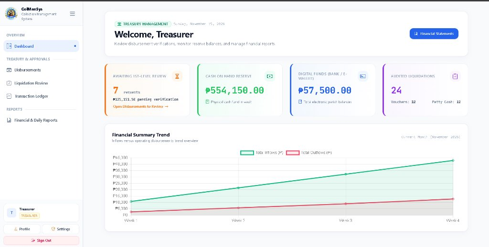
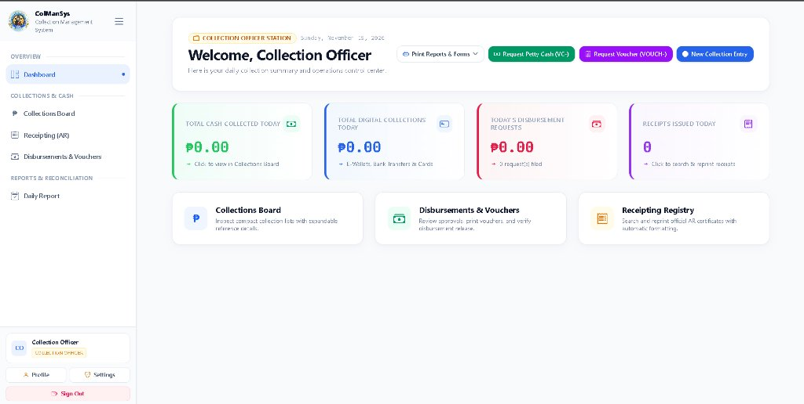
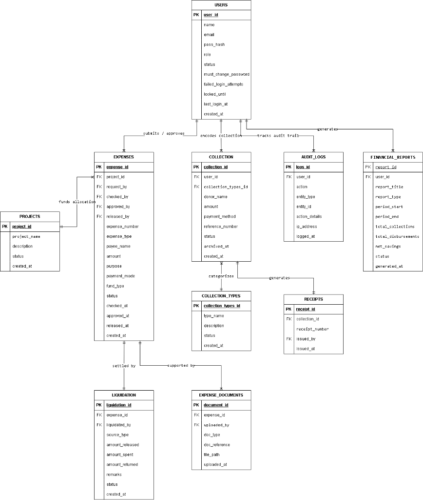

Collection management system proposed for deployment at Our Mother of Perpetual Help Parish, Cabanatuan City
A web-based financial system proposed for deployment at Our Mother of Perpetual Help Parish, Cabanatuan City. Built on 10 core normalized tables in PostgreSQL, ColManSys digitizes parish collections, tracks designated donations and special funds, automates voucher approvals, enforces a double-entry ledger, and produces real-time financial transparency reports. It replaces an older system from 2016 that had no approval workflow, ledger, audit trail, or restore function.
Developed with teammates Auburn John Albert T. Valdez and John Mel I. Villamor.
| System Role | Core Responsibility & Permissions |
|---|---|
| Admin | System administrator and approving authority: oversight, final disbursement approvals, security settings, user management, and audit log inspection. |
| Treasurer | First-level voucher review, cash/digital fund balancing, budget allocations, and monthly financial statement generation. |
| Collection Officer | Daily mass collections recording, automated official receipt issuance, petty cash tracking, and voucher drafting. |
The parish's legacy 2016 desktop system lacked approval workflows, fund separation, audit logs, and backup capabilities. Clerks re-encoded records across multiple spreadsheets, leading to repeated entries, transcription errors, delayed reports, and untracked petty cash.
A normalized relational schema in PostgreSQL with 10 core normalized tables, primary and foreign key constraints, time-stamped transactions, audit tables, and balanced double-entry posting. Approved transactions cannot be deleted; corrections go through logged void or refund entries.
Lead developer and database administrator. I was in charge of the database architecture, schema normalization, ERD and data flow diagrams, as well as core backend modules. Developed with teammates Auburn John Albert T. Valdez and John Mel I. Villamor.
Evaluated under the ISO/IEC 25010 software quality model for the system proposed for deployment at Our Mother of Perpetual Help Parish, Cabanatuan City: six IT expert evaluators gave a grand mean of 3.59/4.00, interpreted as "Very Functional", and four parish end-users gave a grand mean of 3.53/4.00, interpreted as "Very Acceptable".
Multi-tier voucher workflow: the Collection Officer drafts, the Treasurer verifies, and the Treasurer and Admin give second-level approval, followed by release and liquidation.




ColManSys Core Queries & Verification Checks
Sample data. The results below are illustrative and are not actual parish records.
SELECT ct.type_name AS category, COUNT(c.collection_id) AS total_transactions, TO_CHAR(SUM(c.amount), 'FM₱999,999.00') AS total_collected FROM collections c INNER JOIN collection_types ct ON c.type_id = ct.type_id WHERE c.status = 'posted' AND c.collection_date >= '2026-10-01' GROUP BY ct.type_name ORDER BY SUM(c.amount) DESC;
| category | total_transactions | total_collected |
|---|---|---|
| Sunday Mass Tithes & Offertory | 48 | ₱142,650.00 |
| Parish Thanksgiving Donations | 19 | ₱54,200.00 |
| Sacramental & Mass Intentions | 94 | ₱38,150.00 |
| Special Sanctuary Fund Drive | 12 | ₱26,500.00 |
SELECT v.voucher_no, v.payee, TO_CHAR(v.amount, 'FM₱99,999.00') AS amount, v.stage AS approval_stage, u.full_name AS originated_by, v.updated_at FROM disbursement_vouchers v JOIN users u ON v.officer_id = u.user_id WHERE v.status = 'in_review' ORDER BY v.updated_at ASC;
| voucher_no | payee | amount | approval_stage | originated_by | updated_at |
|---|---|---|---|---|---|
| DV-2026-108 | Solar Tech Power Cabanatuan | ₱18,500.00 | Admin Final Review | R. Santos (Treasurer) | 2026-11-04 14:30 |
| DV-2026-112 | St. Joseph Printing Supplies | ₱6,450.00 | Treasurer Review | P. De Vera (Collector) | 2026-11-05 09:15 |
| DV-2026-115 | Parish Outreach Feeding Drive | ₱12,000.00 | Treasurer Review | P. De Vera (Collector) | 2026-11-05 11:40 |